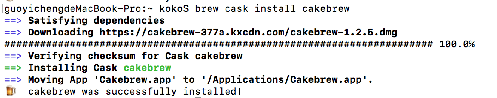
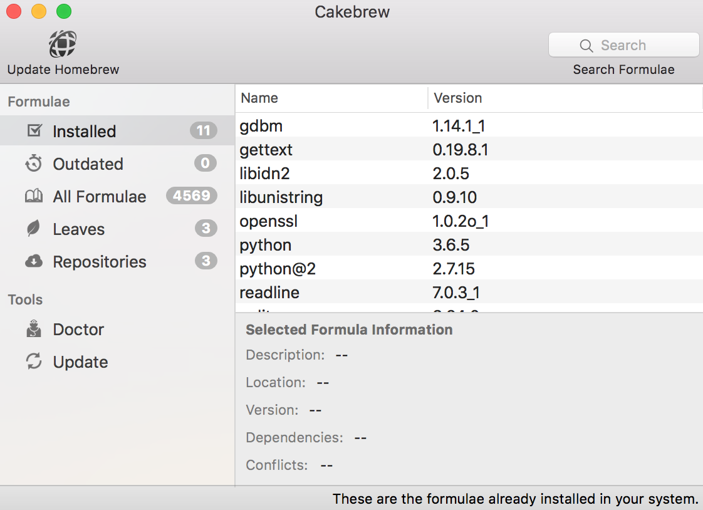
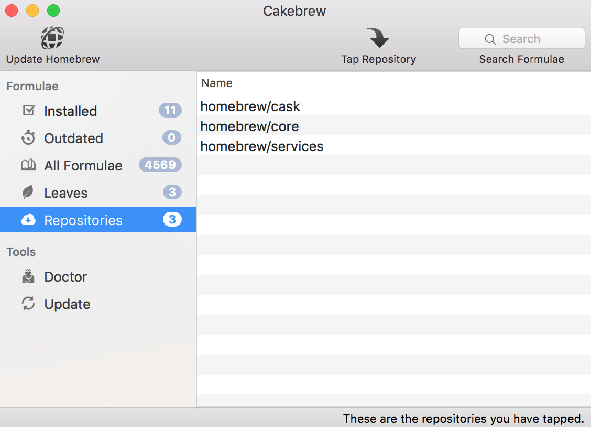
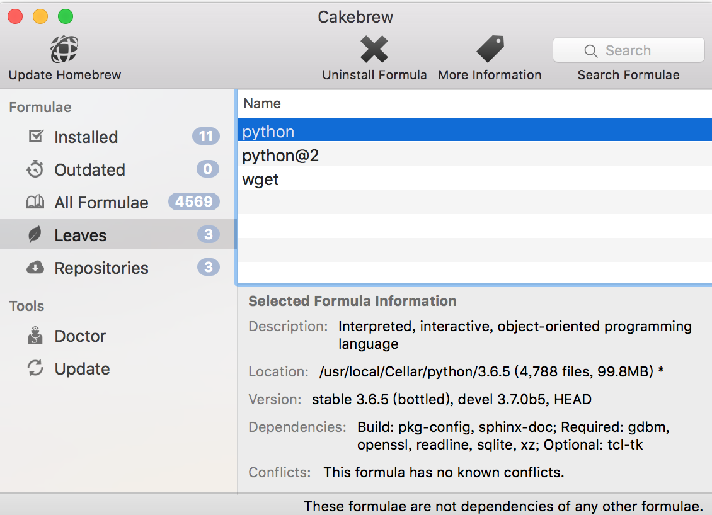

Homebrew (4) - 使用 GUI 介面 Cakebrew 來操作 Homebrew 管理套件
Posted on Thu 29 April 2021 in Homebrew
前言
Homebrew 是 Mac 上非常便利與強大的安裝套件與軟體，不過會需要使用終端機 Terminal 操作，因此有網友製作出一款方便以 GUI 介紹操作 Homebrew 的美麗 GUI 軟體，也就是 Cakebrew，以下來介紹與安裝 Cakebrew。
安裝 Cakebrew
如果已經有 Homebrew Cask ，可以透過 cask 的方式安裝：
$> brew cask install cakebrew
如果沒有 Homebrew Cask ，也可以透過官網連結下載 .dmg 檔案並手動安裝。

另外，Cakebrew 主要是 GUI 的 Homebrew 管理介面，換句話說，並無法透過 Cakebrew 來安裝或管理 Homebrew Cask 安裝的軟體。
Cakebrew 介面
以下列出已經安裝的套件，可以點選套件直接觀看套件的安裝資訊：

列出 Tapped 的擴充 Repository
列出 Homebrew 中所有可安裝的套件（如果有 Tapped 新的 Repository，也會顯 Tapped 的 Repo 中的套件）

顯示 Leaves
Leaves 也就是沒有被其它套件相依的已安裝套件：
